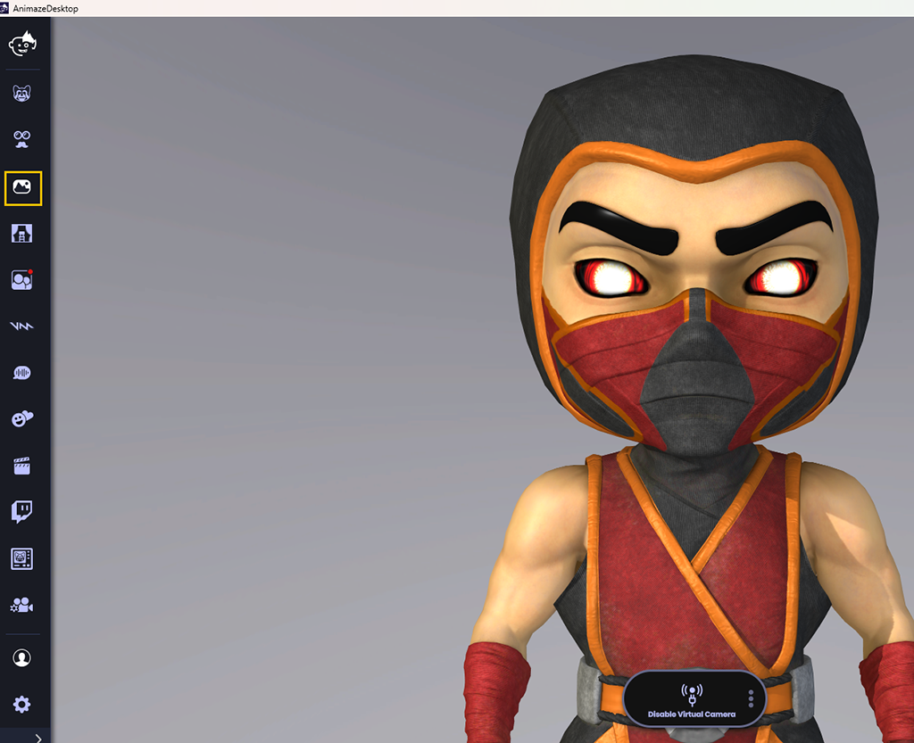
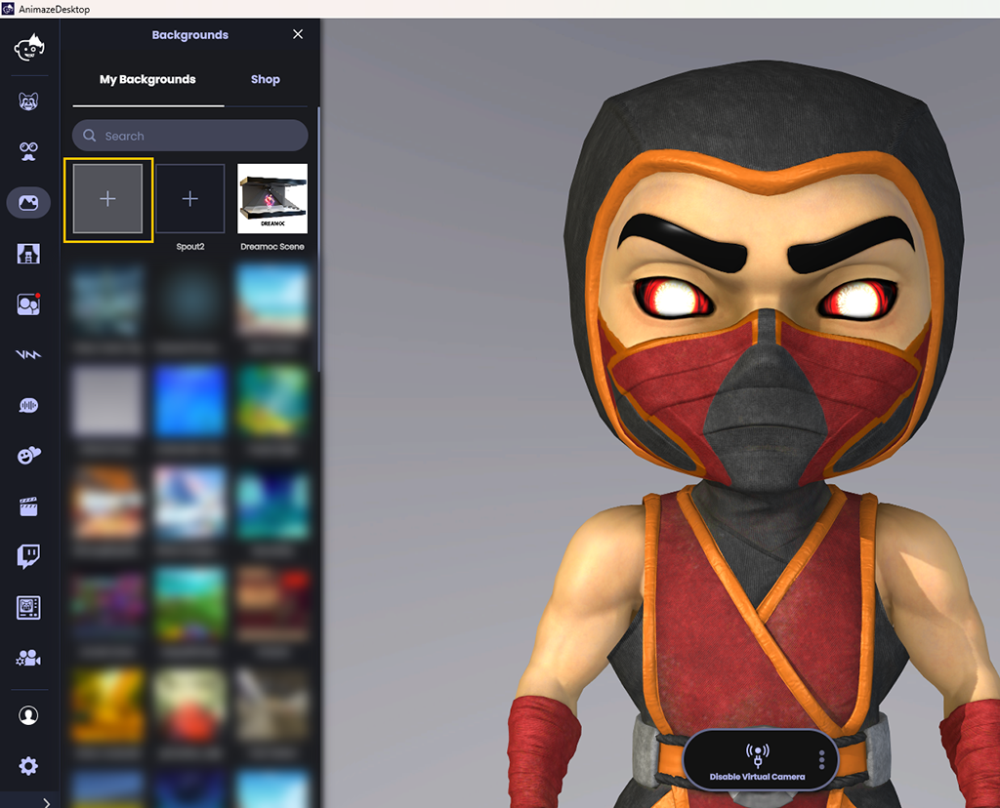
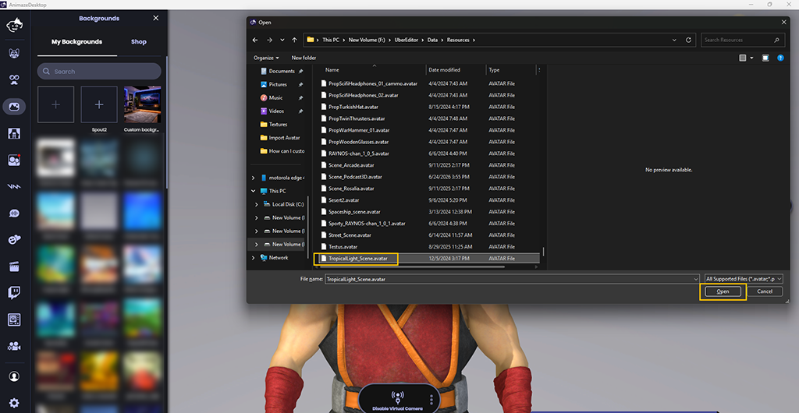
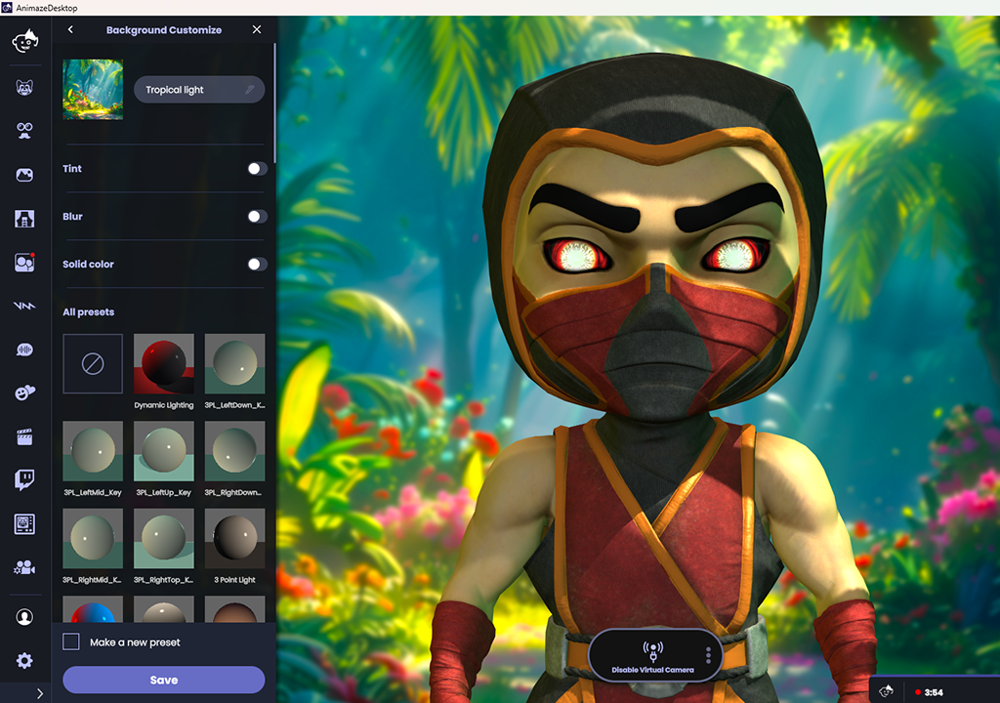
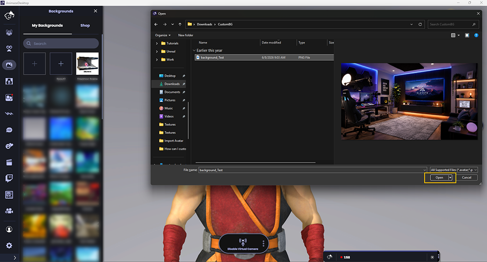
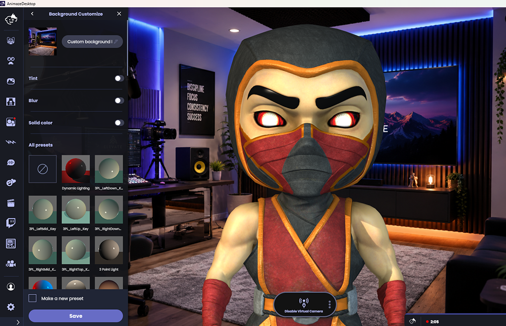

Animaze Desktop: How can I add a custom background?
Animaze allows you to import Custom Backgrounds (.avatar file), or to Use a Photo as a Background (.jpg, .png, .bmp etc files).
To add a Custom Background in Animaze, follow these steps:
1. Launch Animaze
2. Click on the Backgrounds button in the left menu, then in the Imports tab click the box under Import Custom Backgrounds
 
3. Select the .avatar file you have ready on your PC and click Open

4. The imported background should be displayed

Now you have a custom background imported in Animaze.
If you would prefer to have a certain picture as a background, you can also use it into the Animaze app.
1. Launch Animaze
2. Click on the Backgrounds button in the left menu, then in the Imports tab click the box under Use a Photo as a Background
3. Select the photo you have ready on your PC and click Open

4. The photo background should be displayed

Please note: For best results, use images that are in 16:9 aspect ratio and have a minimum resolution of 1920x1080 pixels (1080p) for your custom backgrounds.